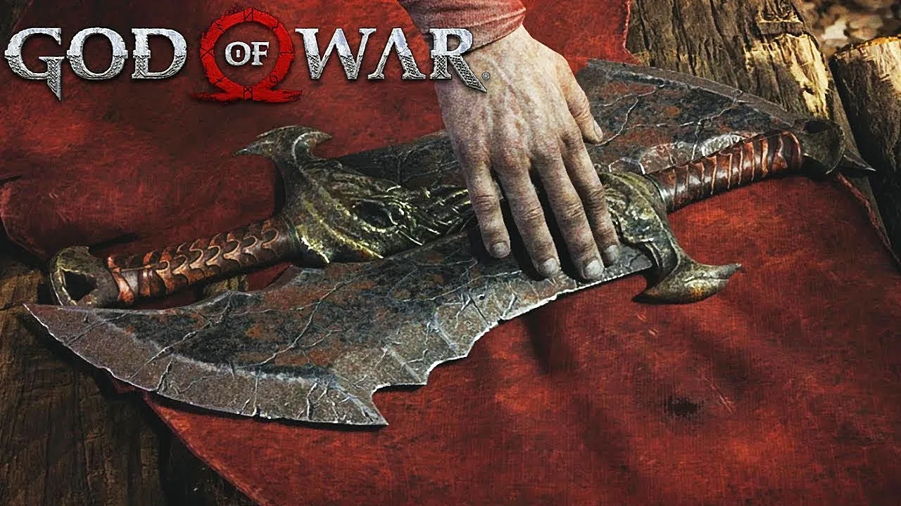

Lâminas do Caos
 As Lâminas do Caos foram forjadas nas profundezas mais obscuras do submundo pelo próprio Ares (deus da guerra grego). Elas foram imbuídas de fogo, o que faz com que elas acendam a cada golpe que o usuário realiza. As correntes das Lâminas estendem-se por uma distância fixa a cada ataque, o que permite um movimento fluido, não importando quem as maneje. As correntes das lâminas estavam permanentemente presas aos antebraços do portador, e serviam como um lembrete do seu juramento ao Deus da Guerra. As correntes só podiam ser removidas pelo próprio Deus da Guerra, ou, então, quando o tempo de servidão do portador terminasse. No entanto, quando seu criador está morto e o servo ainda as possui, elas podem ser removidas ou equipadas a hora que o usuário desejar.
Depois que Kratos jurou sua vida ao Deus da Guerra, Ares ordernou que suas Harpias pegassem as Lâminas do Caos, armas dignas de um campeão de um deus, e as entregou ao espartano. Depois que Ares dizimou as forças bárbaras, Kratos usou suas novas armas para matar o Rei Bárbaro, Alrik. Kratos continuou a utilizar as Lâminas durante seu tempo de servidão a Ares e aos Deuses - até mesmo contra sua própria esposa, Lisandra, e a filha Calíope, a quem ele matou, sem saber, durante um ataque de fúria instigado por Ares.
Kratos, no auge de sua tarefa de matar o Deus da Guerra, teve as Lâminas do Caos arrancadas dele depois de defender sua família em uma das ilusões de Ares. Com as Lâminas tiradas dele, Ares usou-as para matar a família de Kratos mais uma vez, enquanto Kratos, desamparado, assistia com horror. Após a queda de Ares, as Lâminas nunca mais foram vistas, mas Kratos logo recebeu as Lâminas de Atena; armas similares.
Vários anos depois, Kratos encontrou as Lâminas do Caos e trouxe-as consigo para o reino nórdico, onde ele, eventualmente, as esconderia debaixo do piso de sua cabana, até seu filho, Atreus, adoecer devido às suas naturezas conflitantes. Após aprender que o ingrediente principal para curar Atreus estava em Helheim, onde as propriedades de gelo do Machado Leviatã são inúteis, Kratos pegou suas Lâminas novamente e as acorrentou aos seus antebraços mais uma vez.
Diferente do Leviatã, que possui o poder do gelo, as lâminas possuem o poder do fogo. Quando aprimoradas progressivamente, as lâminas mudam gradualmente a sua aparência, transformando as velhas e rachadas lâminas gregas em algo mais nórdico. Glifos nórdicos semelhantes aos do Leviatã, que brilham em laranja ardente quando acesos, são adicionados, junto com pequenas runas escritas em nórdico antigo nas bordas de cada lâmina. Os punhos se tornam dourados e ganham duas aberturas nos olhos dos crânios para ataques rúnicos; um para ataque leve e outro pesado, enquanto também permitem que Kratos troque os pomos e obtenha atributos diferentes. Kratos também pode infundir o fogo de sua Lâmina esquerda em seu escudo e usá-lo contra seus inimigos, causando grande dano. As Lâminas, através de um Ataque Rúnico chamado Pancada Meteórica, podem invocar uma chuva de meteoros de fogo que causam dano de fogo aos inimigos. Depois de encontrar Brok em Helheim, as lâminas também são aprimoradas para reter, temporariamente, os Ventos de Hel.